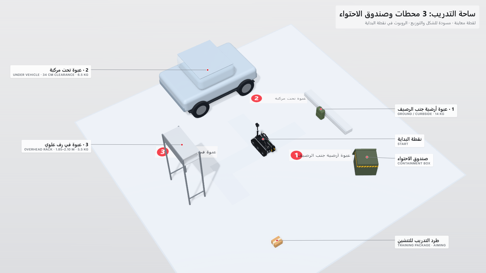
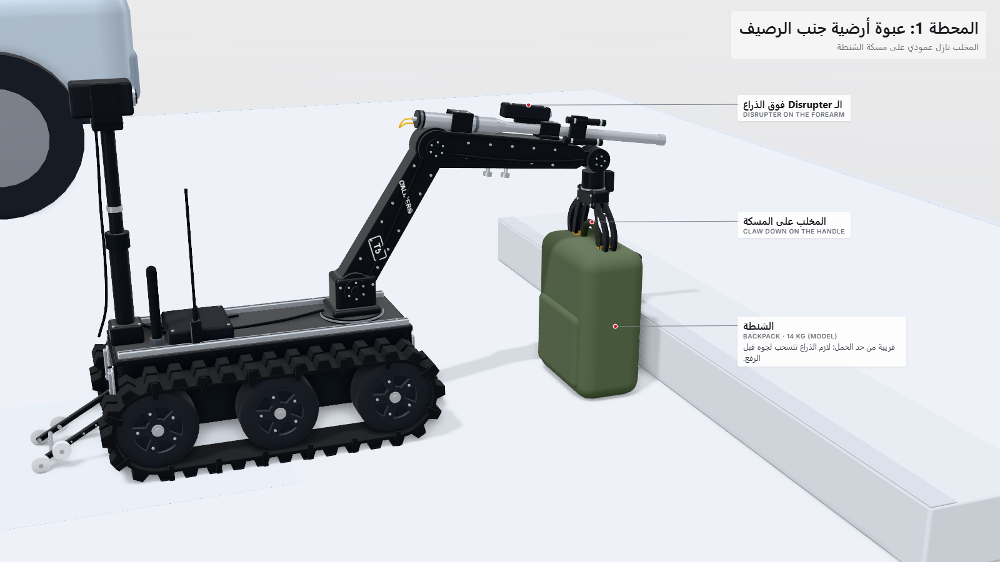
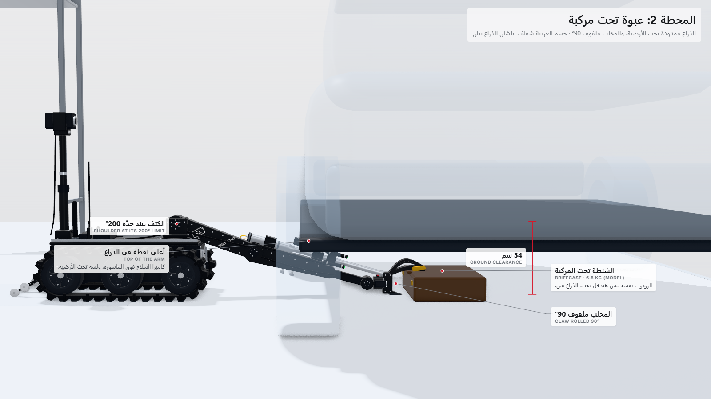
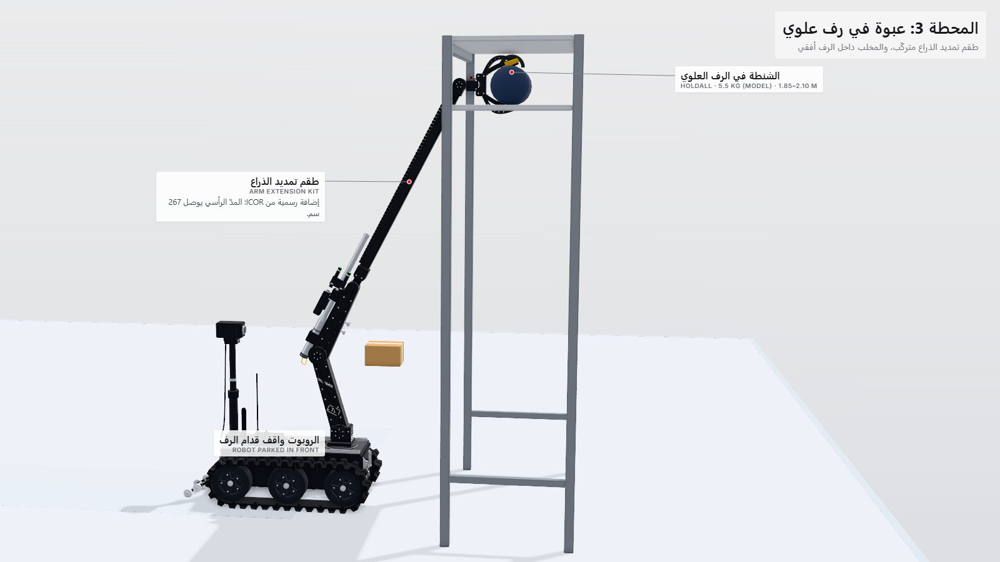
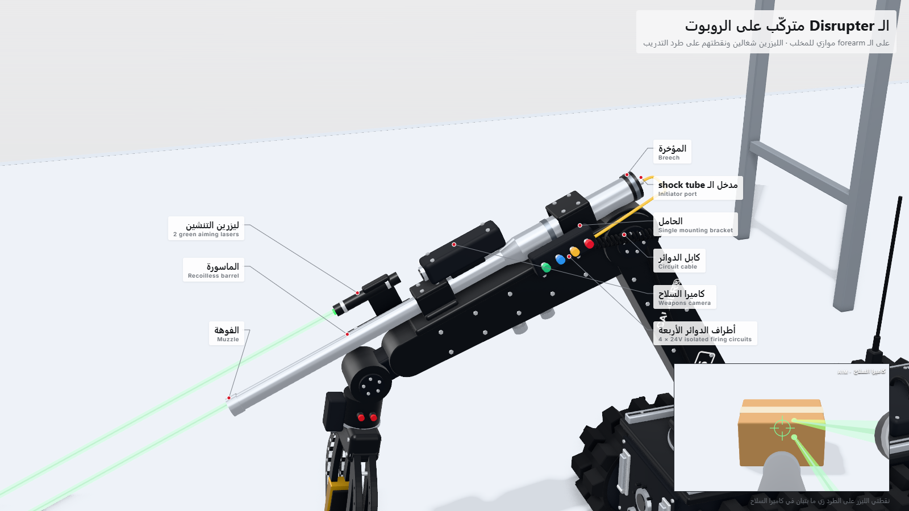
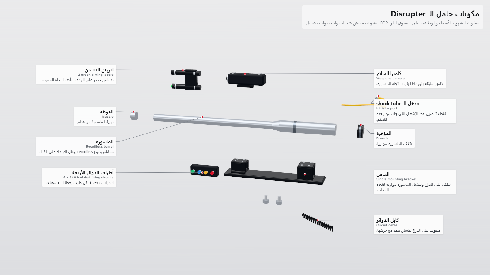
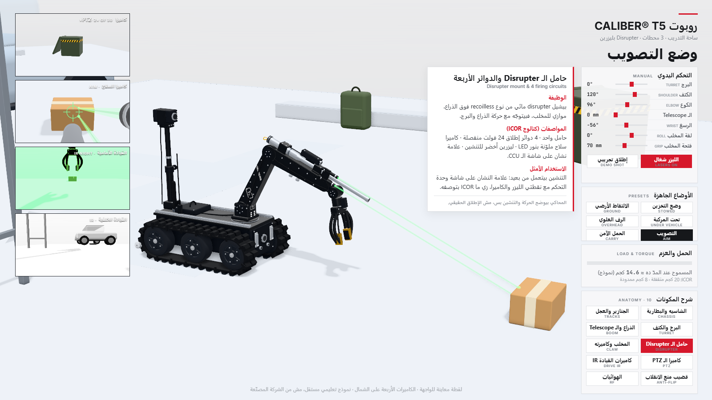
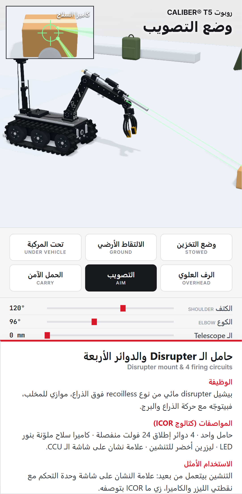

محاكي CALIBER® T5: معاينة التطوير
نظام تفكيك المكونات الجديد، والروبوت متعمل من جديد على صور ICOR الحقيقية، ولقطات ساحة التدريب.
نسخة مؤقتة للمراجعة · نموذج تعليمي مستقل، مش من الشركة المصنّعة
افتح نظام التفكيك التفاعلي
الأحسن على كمبيوتر، أو الموبايل بالعرض. دوس على أي جزء يتفتح.
نظام التفكيك اللحظي
زرار لكل جزء من 10 أجزاء: الجزء بيتفتح في ثانية، والكاميرا بتروح له، والأجزاء الداخلية بتظهر بالأخضر.
- جزء واحد: الغطا بيطلع، والجسم بيبقى زجاج، والأجزاء الداخلية بتبان بالأخضر وعليها أساميها.
- تفكيك كامل: كل الأجزاء بتتفتح ورا بعض.
- إعادة تجميع: كل حاجة بترجع مكانها بنعومة.
لقطات المعاينة
الساحة بمحطاتها الـ 3، والـ Disrupter، والواجهة بالعربي. دوس على أي لقطة تتفتح بحجمها الكامل.
















الأرقام من كتالوج ICOR الرسمي (datasheet v3.0)، والروبوت متقاس على صور ICOR المنشورة.
الأجزاء الخضرا الداخلية توضيحية: ICOR ما نشرتش التصميم الداخلي للـ T5، فدي نوع الموتور والتروس اللي كل مفصل محتاجه.
المحاكي بيوضح الحركة والتنشين بس، مش الإطلاق الحقيقي. نموذج تعليمي مستقل، مش من الشركة المصنّعة.